|
\[\textbf{Lineu Alberto Cavazani de Freitas}\] \[\textbf{Prof. Cesar Augusto Taconeli}\] \[\textbf{Modelos Lineares Generalizados (CE225)}\]
Modelos de Regressão para Dados Binários
Casos de Câncer de Mama de Wisconsin
1 Dados
Exemplo disponível em Bennett, K.,P., and Mangasarian, O.L., 1992
Os dados provêm de um estudo de câncer de mama em Wisconsin. São 681 casos de tumores potencialmente cancerosos, dos quais 238 são realmente malignos.
As variáveis explicativas disponíveis dizem respeito a características observadas nos tumores sob estudo.
Os valores das variáveis preditoras foram determinados por um médico observando as células e classificando-as em uma escala de 1 (normal) a 10 (mais anormal) em relação a cada característica avaliada.
Variáveis:
- Class - classificação do tumor: 0 maligno, 1 benigno (resposta)
- Adhes - adesão marginal
- BNucl - nucléolos nus
- Chrom - cromatina branda
- Epith - tamanho da célula epitelial
- Mitos - mitose
- NNucl - nucléolo normal
- Thick - espessura do aglomerado
- UShap - uniformidade da forma da célula
- USize - uniformidade do tamanho da célula
O objetivo da análise foi modelar a probabilidade de do tumor sob investigação ser maligno.
Os dados estão disponíveis no pacote de Julian Faraway (2016). O pacote fornece a documentação dos dados. Verifique!
Verificando a quantidade de tumores benignos na base (Class = 1):
## [1] 443Vamos redefinir os níveis da variável classe de forma a modelar a probabilidade de tumor maligno:
Outras opções para a conversão são as funções levelse relevel.
E agora sim, os 238 tumores malignos estão codificados como 1, enquanto os benignos estão codificados como 0.
## [1] 238As primeiras 6 linhas da base de dados têm a seguinte forma:
## Class Adhes BNucl Chrom Epith Mitos NNucl Thick UShap USize
## 1 0 1 1 3 2 1 1 5 1 1
## 2 0 5 10 3 7 1 2 5 4 4
## 3 0 1 2 3 2 1 1 3 1 1
## 4 0 1 4 3 3 1 7 6 8 8
## 5 0 3 1 3 2 1 1 4 1 1
## 6 1 8 10 9 7 1 7 8 10 10Com os ajustes realizados, pode-se fazer a análise descritiva da base de dados:
2 Análise Descritiva
Vamos realizar uma breve análise descritiva dos dados.
2.1 Medidas Resumo
Usando a função summary vamos verificar o mínimo, o máximo, a mediana e os quartis das variáveis explicativas em estudo:
## Adhes BNucl Chrom Epith
## Min. : 1.000 Min. : 1.000 Min. : 1.000 Min. : 1.000
## 1st Qu.: 1.000 1st Qu.: 1.000 1st Qu.: 2.000 1st Qu.: 2.000
## Median : 1.000 Median : 1.000 Median : 3.000 Median : 2.000
## Mean : 2.816 Mean : 3.542 Mean : 3.433 Mean : 3.231
## 3rd Qu.: 4.000 3rd Qu.: 6.000 3rd Qu.: 5.000 3rd Qu.: 4.000
## Max. :10.000 Max. :10.000 Max. :10.000 Max. :10.000
## Mitos NNucl Thick UShap
## Min. : 1.000 Min. : 1.000 Min. : 1.000 Min. : 1.000
## 1st Qu.: 1.000 1st Qu.: 1.000 1st Qu.: 2.000 1st Qu.: 1.000
## Median : 1.000 Median : 1.000 Median : 4.000 Median : 1.000
## Mean : 1.604 Mean : 2.859 Mean : 4.436 Mean : 3.204
## 3rd Qu.: 1.000 3rd Qu.: 4.000 3rd Qu.: 6.000 3rd Qu.: 5.000
## Max. :10.000 Max. :10.000 Max. :10.000 Max. :10.000
## USize
## Min. : 1.00
## 1st Qu.: 1.00
## Median : 1.00
## Mean : 3.14
## 3rd Qu.: 5.00
## Max. :10.00Nota-se pelas medidas resumo a predominância de tumores com células classificadas como normais já que os valores das médias são, em sua maioria, baixos, distantes do valor máximo (10) considerado anormal.
2.2 Boxplots
O boxplot é uma alternativa de análise descritiva para avaliação da distribuição dos dados.
par(mfrow=c(3,3))
for (i in 2:ncol(dados)) {
boxplot(dados[,i],
xlab = '',
ylab = '',
main = names(dados[i]),
las=1,
col = '#A2F4D6')
}
mtext(side=2,cex=1.3,line=-1.5,text="Nota na Avaliação Médica",outer=TRUE)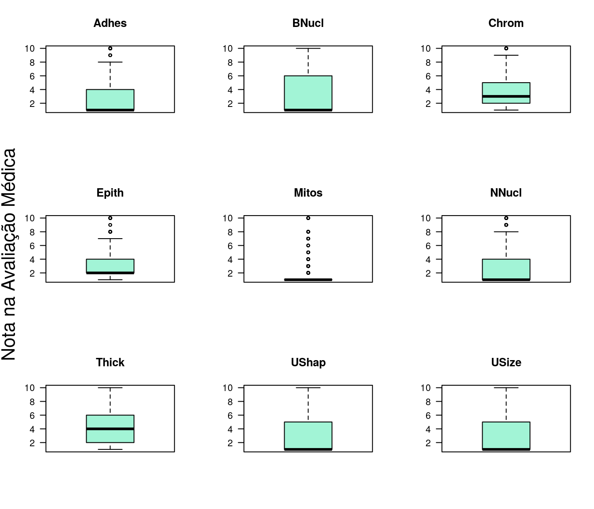
Os boxplots também fornecem indícios de valores predominantemente baixos, e portanto, assimetria nas distribuições variáveis explicativas.
2.3 Histogramas
O histograma é outra alternativa para observar a forma da distribuição dos dados.
par(mfrow=c(3,3))
for (i in 2:ncol(dados)) {
hist(dados[,i],
xlab = '',
ylab = '',
main = names(dados[i]),
las=1,
col = '#FACACC')
}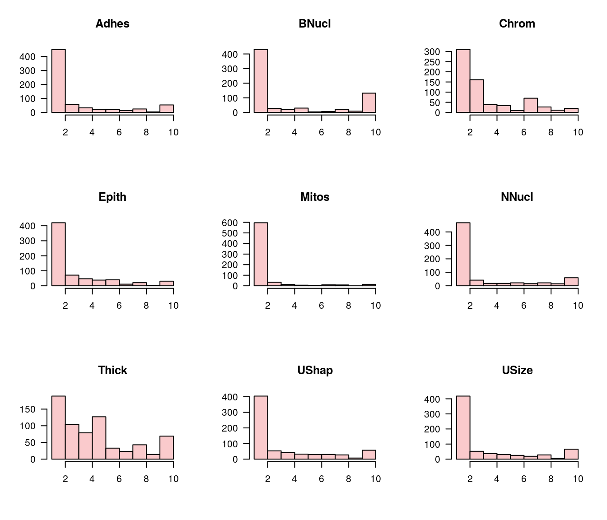
Os histogramas apontam na mesma direção das análises anteriores. Aqui fica claro, para todas as variáveis, a predominância de valores entre 0 e 2.
2.4 Distribuição dos valores das covariáveis para tumores benignos e malignos
library(ggplot2)
library(gridExtra)
bp <- function(covariavel, xlab){
ggplot(dados,
aes(x=factor(Class),
y=covariavel,
color=factor(Class))) +
geom_boxplot()+
guides(color=FALSE)+
xlab(xlab)+
ylab('') +
theme_light()
}
g1 <- bp(dados[,2],names(dados[2]))
g2 <- bp(dados[,3],names(dados[3]))
g3 <- bp(dados[,4],names(dados[4]))
g4 <- bp(dados[,5],names(dados[5]))
g5 <- bp(dados[,6],names(dados[6]))
g6 <- bp(dados[,7],names(dados[7]))
g7 <- bp(dados[,8],names(dados[8]))
g8 <- bp(dados[,9],names(dados[9]))
g9 <- bp(dados[,10],names(dados[10]))
grid.arrange(g1, g2, g3, g4, g5, g6, g7,g8 ,g9, ncol=3, nrow=3)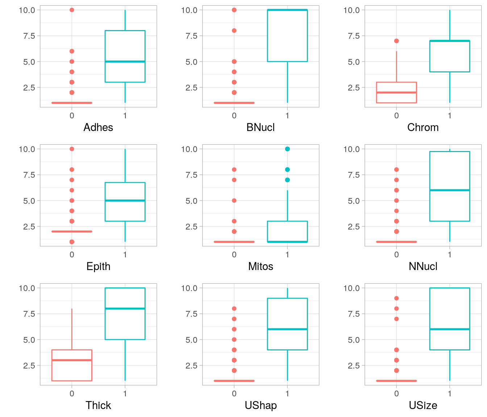
Os gráficos mostram que observações correspondentes a tumores malignos (codificados como 1) tendem a apresentar escores mais elevados para as covariáveis consideradas.
2.5 Análise das correlações entre as covariáveis
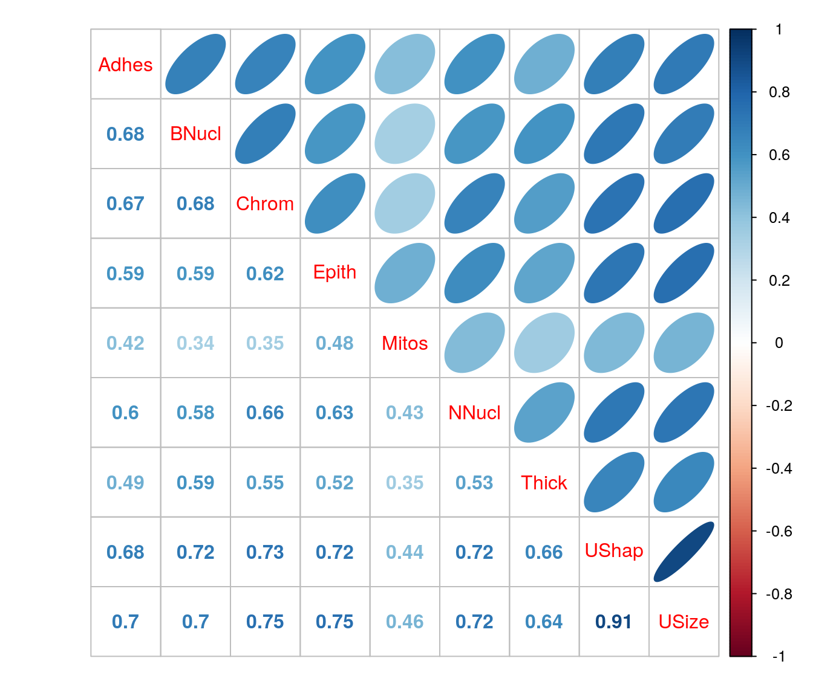
Todas as covariáveis apresentam correlações positivas. Em diversos casos foram verificados valores superiores a 0.7, configurando correlações bastante expressivas.
2.6 Uma forma eficiente de explorar relações
Fazendo uso da função pairs.panels do pacote psych é possível verificar numa matriz: os gráficos de dispersão das variáveis duas a duas (na triangular inferior), as estimativas das correlações (na triangular superior) e os histogramas com as densidades na diagonal principal. Num único gráfico podemos verificar relações entre as variáveis e suas distribuições marginais.
library(psych)
pairs.panels(dados[ , 2:10],
method = "pearson",
hist.col = 2,
density = TRUE,
ellipses = FALSE,
pch = 20,
lwd = 0.01
)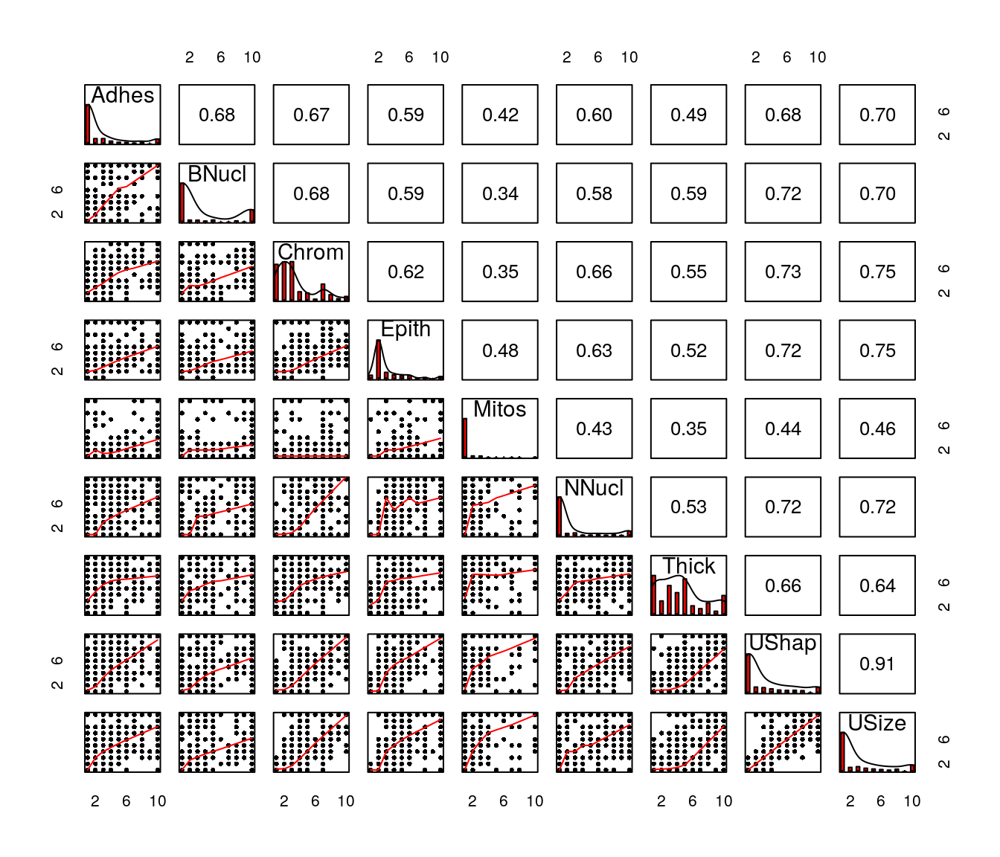
Por mais que seja um recurso interessante deve-se atentar para o fato de que se há muitas variáveis no estudo a visualização fica comprometida.
3 Ajuste dos Modelos de Regressão
Os modelos de regressão para dados binários com distribuição de probabilidades binomial para a resposta são definidos da seguinte forma:
\[ \newcommand{\undertilde}[1]{\underset{\widetilde{}}{#1}} \] \[y_{i}|\undertilde{x_{i}} \sim Binomial (m_{i}, \pi_{i})\]
\[ \newcommand{\undertilde}[1]{\underset{\widetilde{}}{#1}}\]
\[ g(\pi_{i}) = {\beta_{0}} + {\beta_{1}}\, x_{i1} + {\beta_{2}}\, x_{i2} + ... + {\beta_{p}}\, x_{ip},\]
onde \(y_i\) é a variável resposta, \(x_{i1}, x_{i2}, ..., x_{ip}\) as variáveis explicativas avaliadas no \(i-\)ésimo indivíduo e, neste caso, \(m_{i}\) = 1 já que a variável resposta assume valores 0 ou 1, se tratando portanto de variáveis com distribuição de Bernoulli. Por fim, \(g(\pi_{i})\) é a função de ligação, se trata de uma função real, monótona e diferenciável, que associa e lineariza a relação entre o componente aleatório e o sistemático do modelo.
Neste problema estamos interessados em modelar a probabilidade de tumor maligno em função das covariáveis.
Nas seções seguintes são mostrados o ajuste dos Modelos Lineares Generalizados para dados binários considerando as covariáveis de forma aditiva com diferentes funções de ligação.
3.1 Ligação logito
Vamos ajustar um Modelo Linear Generalizado Binomial com função de ligação Logito. A expressão do modelo é dada por:
\[ ln\left ( \frac{\pi _{i}}{1-\pi _{i}}\right ) = {\beta_{0}} + {\beta_{1}}\, Adhes_{i} + {\beta_{2}}\, BNucl_{i} + {\beta_{3}}\, Chrom_{i} +\\ {\beta_{4}}\, Epith_{i} + {\beta_{5}}\, Mitos_{i} + {\beta_{6}}\, NNucl_{i} + {\beta_{7}}\, Thick_{i} + {\beta_{8}}\, UShap_{i} + {\beta_{9}}\, USize_{i}\]
No R, o modelo é declarado da seguinte forma:
3.2 Ligação probito
Vamos ajustar um Modelo Linear Generalizado Binomial com função de ligação Probito. A expressão do modelo é dada por:
\[ \phi ^{-1} (\pi _{i}) = {\beta_{0}} + {\beta_{1}}\, Adhes_{i} + {\beta_{2}}\, BNucl_{i} + {\beta_{3}}\, Chrom_{i} +\\ {\beta_{4}}\, Epith_{i} + {\beta_{5}}\, Mitos_{i} + {\beta_{6}}\, NNucl_{i} + {\beta_{7}}\, Thick_{i} + {\beta_{8}}\, UShap_{i} + {\beta_{9}}\, USize_{i},\]
em que \(\phi ^{-1}\) é a inversa da acumulada da distribuição Normal.
No R, o modelo é declarado da seguinte forma:
3.3 Ligação complemento Log-Log
Vamos ajustar um Modelo Linear Generalizado Binomial com função de ligação Complemento Log Log. A expressão do modelo é dada por:
\[ ln[-ln(1-\pi _{i})] = {\beta_{0}} + {\beta_{1}}\, Adhes_{i} + {\beta_{2}}\, BNucl_{i} + {\beta_{3}}\, Chrom_{i} +\\ {\beta_{4}}\, Epith_{i} + {\beta_{5}}\, Mitos_{i} + {\beta_{6}}\, NNucl_{i} + {\beta_{7}}\, Thick_{i} + {\beta_{8}}\, UShap_{i} + {\beta_{9}}\, USize_{i}\]
No R, o modelo é declarado da seguinte forma:
3.4 Ligação Cauchy
Vamos ajustar um Modelo Linear Generalizado Binomial com função de ligação Cauchy. A expressão do modelo é dada por:
\[ tan[\pi_{i}(\mu_{i}-0,5)] = {\beta_{0}} + {\beta_{1}}\, Adhes_{i} + {\beta_{2}}\, BNucl_{i} + {\beta_{3}}\, Chrom_{i} +\\ {\beta_{4}}\, Epith_{i} + {\beta_{5}}\, Mitos_{i} + {\beta_{6}}\, NNucl_{i} + {\beta_{7}}\, Thick_{i} + {\beta_{8}}\, UShap_{i} + {\beta_{9}}\, USize_{i}\]
No R, o modelo é declarado da seguinte forma:
4 Escolha do Modelo
Para seleção de modelos diversas medidas podem ser utilizadas, em especial vamos utilizar a verossimilhança dos modelos.
O critério de informação AIC pode também ser utilizado, porém o AIC penaliza o número de parâmetros do modelo. Como os modelos tem o mesmo número de parâmetros, o critério aponta para a mesma direção da verossimilhança pois todos são penalizados da mesma forma; para fins de ilustração, as duas quantidades são exibidas:
selec <- data.frame(ajuste=c('logito', 'probito', 'cloglog', 'cauchy'),
aic=c(AIC(ajuste1), AIC(ajuste2), AIC(ajuste3), AIC(ajuste4)),
logLik=c(logLik(ajuste1),logLik(ajuste2),logLik(ajuste3),logLik(ajuste4)))
selec## ajuste aic logLik
## 1 logito 109.4642 -44.73210
## 2 probito 106.8797 -43.43987
## 3 cloglog 119.6111 -49.80556
## 4 cauchy 126.5381 -53.26907O modelo que apresentou menor AIC e maior verossimilhança foi o modelo Binomial com função de ligação Probito.
5 Análise do modelo ajustado selecionado
Vamos seguir as análises fazendo uso do modelo Binomial com função de ligação Probito.
5.1 Resumo do Modelo
O modelo original foi ajustado usando todas as covariáveis disponíveis. Vamos verificar no resumo do modelo selecionado quais covariáveis apresentam efeito significativo na classificação do tumor.
##
## Call:
## glm(formula = Class ~ ., family = binomial(link = "probit"),
## data = dados)
##
## Deviance Residuals:
## Min 1Q Median 3Q Max
## -2.96496 -0.06320 -0.01838 0.00098 2.48862
##
## Coefficients:
## Estimate Std. Error z value Pr(>|z|)
## (Intercept) -5.86630 0.66528 -8.818 < 2e-16 ***
## Adhes 0.19293 0.07077 2.726 0.00641 **
## BNucl 0.21303 0.05093 4.183 2.88e-05 ***
## Chrom 0.30639 0.09454 3.241 0.00119 **
## Epith 0.03337 0.08794 0.380 0.70431
## Mitos 0.28929 0.17243 1.678 0.09340 .
## NNucl 0.15092 0.06424 2.349 0.01880 *
## Thick 0.32533 0.08184 3.975 7.03e-05 ***
## UShap 0.17603 0.12251 1.437 0.15075
## USize -0.03461 0.11361 -0.305 0.76063
## ---
## Signif. codes: 0 '***' 0.001 '**' 0.01 '*' 0.05 '.' 0.1 ' ' 1
##
## (Dispersion parameter for binomial family taken to be 1)
##
## Null deviance: 881.39 on 680 degrees of freedom
## Residual deviance: 86.88 on 671 degrees of freedom
## AIC: 106.88
##
## Number of Fisher Scoring iterations: 9O resumo do modelo ajustado indica que as variáveis adesão marginal, nucléolos nus, cromatina branda, nucléolo normal e espessura do aglomerado estão associadas a uma maior probabilidade de tumor maligno, enquanto as demais variáveis não apresentam relação com a resposta.
5.2 Reajuste do Modelo
Como as covariáveis são altamente correlacionadas, é válido inserir as covariáveis uma a uma no modelo para verificar sua significância na presença das outras, tal como o realizado pelo algoritmo stepwise.
Sendo assim, o novo modelo fica da seguinte forma:
O resumo do novo modelo ajustado:
##
## Call:
## glm(formula = Class ~ Adhes + BNucl + Chrom + Mitos + NNucl +
## Thick + UShap, family = binomial(link = "probit"), data = dados)
##
## Deviance Residuals:
## Min 1Q Median 3Q Max
## -2.98417 -0.06380 -0.01957 0.00098 2.44529
##
## Coefficients:
## Estimate Std. Error z value Pr(>|z|)
## (Intercept) -5.80235 0.64082 -9.055 < 2e-16 ***
## Adhes 0.19430 0.06795 2.859 0.004246 **
## BNucl 0.21453 0.05062 4.238 2.25e-05 ***
## Chrom 0.30798 0.09308 3.309 0.000937 ***
## Mitos 0.28407 0.17099 1.661 0.096646 .
## NNucl 0.15272 0.06159 2.480 0.013147 *
## Thick 0.32367 0.08088 4.002 6.29e-05 ***
## UShap 0.15747 0.08938 1.762 0.078123 .
## ---
## Signif. codes: 0 '***' 0.001 '**' 0.01 '*' 0.05 '.' 0.1 ' ' 1
##
## (Dispersion parameter for binomial family taken to be 1)
##
## Null deviance: 881.388 on 680 degrees of freedom
## Residual deviance: 87.093 on 673 degrees of freedom
## AIC: 103.09
##
## Number of Fisher Scoring iterations: 9O algoritmo indica que as variáveis tamanho da célula epitelial e uniformidade do tamanho da célula, de fato, não são necessárias para o ajuste.
Agora, vamos realizar o teste da razão de verossimilhança do modelo inicial e do reduzido:
## Analysis of Deviance Table
##
## Model 1: Class ~ Adhes + BNucl + Chrom + Epith + Mitos + NNucl + Thick +
## UShap + USize
## Model 2: Class ~ Adhes + BNucl + Chrom + Mitos + NNucl + Thick + UShap
## Resid. Df Resid. Dev Df Deviance Pr(>Chi)
## 1 671 86.880
## 2 673 87.093 -2 -0.21331 0.8988O p-valor do teste foi relativamente alto, portanto pode-se concluir que o modelo restrito se ajusta aos dados amostrais tão bem quanto o modelo considerando todas as covariáveis. Assim, o modelo final fica expresso por:
\[ \phi ^{-1} (\hat{\pi} _{i}) = { -5.8024} + {0.1943}\, Adhes_{i} + {0.2145}\, BNucl_{i} + {0.3080}\, Chrom_{i} + \\ {0.2841}\, Mitos_{i} + {0.1527}\, NNucl_{i} + {0.3237}\, Thick_{i} + {0.1575}\, UShap_{i}\]
5.3 Análise de Resíduos
Tal como nos modelos de regressão linear com erros Normais, a análise de resíduos é uma importante etapa do ajuste dos modelos para dados binários e dos Modelos Lineares Generalizados em geral.
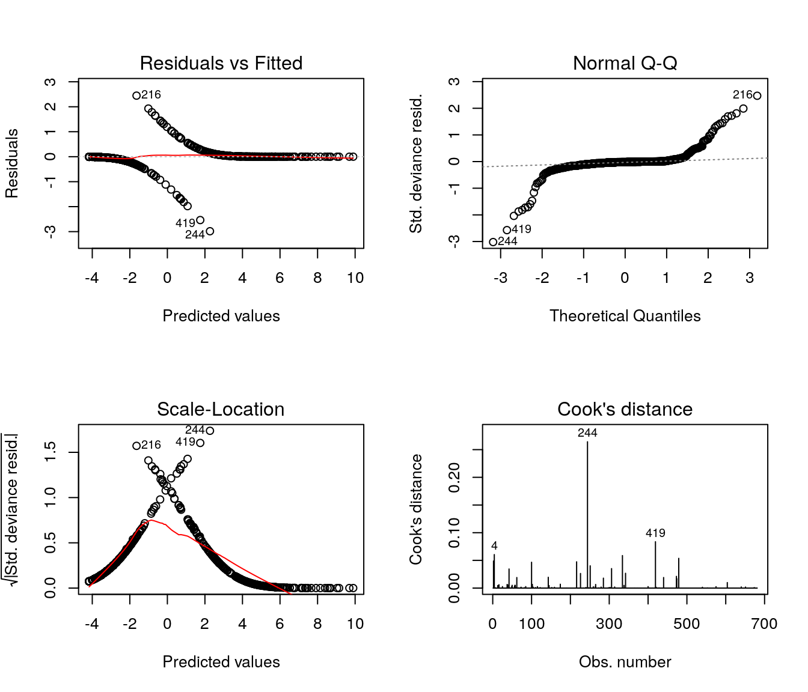
Os gráficos de diagnóstico padrão para a função glm são baseados nos resíduos componentes da deviance e, muitas vezes, complicados de avaliar na prática; contudo existem outras opções a serem exploradas.
5.4 Medidas de Influência
Uma alternativa para verificação de medidas influentes está implementada no pacote car:
## Loading required package: carData## Registered S3 methods overwritten by 'car':
## method from
## influence.merMod lme4
## cooks.distance.influence.merMod lme4
## dfbeta.influence.merMod lme4
## dfbetas.influence.merMod lme4##
## Attaching package: 'car'## The following object is masked from 'package:psych':
##
## logit## The following objects are masked from 'package:faraway':
##
## logit, vif## The following object is masked from 'package:dplyr':
##
## recode## The following object is masked from 'package:purrr':
##
## some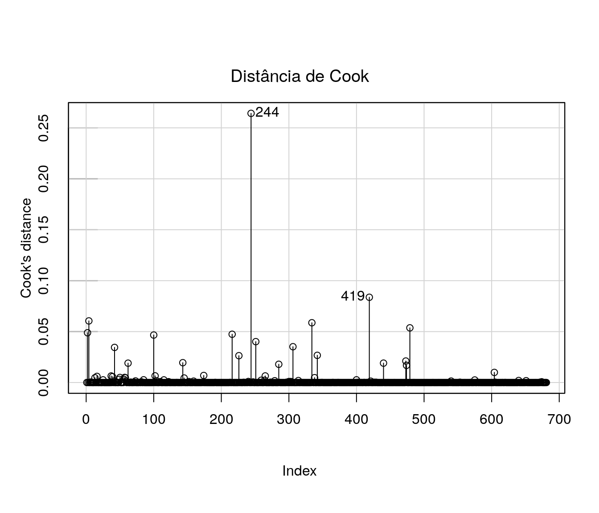
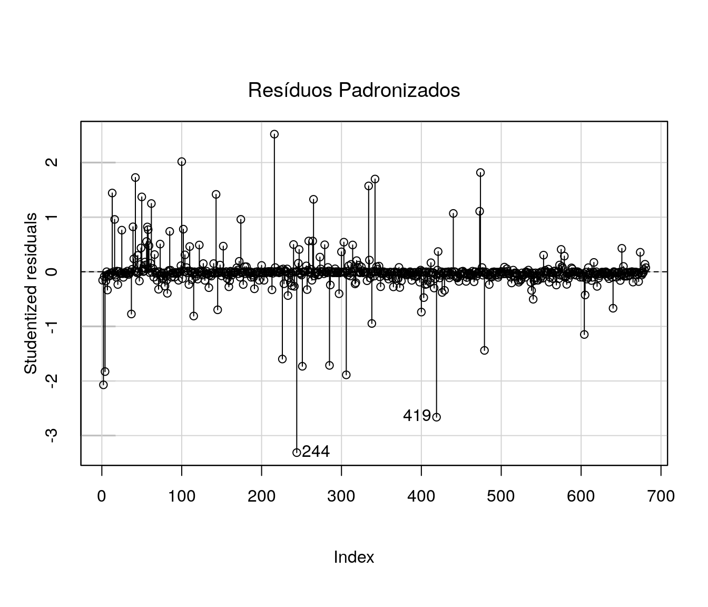
Não há indicativos fortes de outliers ou observações influentes.
5.5 Resíduos Quantílicos Aleatorizados
Outra alternativa é avaliar a qualidade do ajuste com base nos resíduos quantílicos aleatorizados. A função qresiduals do pacote statmod extrai este tipo de resíduos do modelo
par(mfrow=c(1,2))
res <- qresiduals(ajuste2.1)
plot(res)
residuos <- qresiduals(ajuste2.1)
qqnorm(residuos)
qqline(residuos, col = 2)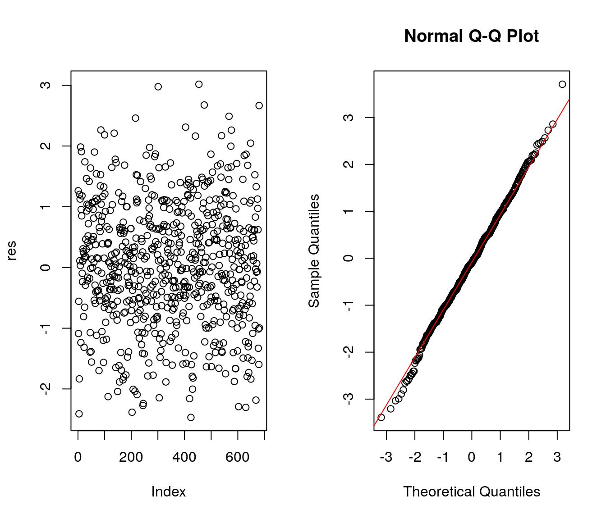
No gráfico da esquerda nota-se que os resíduos estão dispersos em torno de 0 entre -3 e 3. Além disso, no gráfico a direita verifica-se que os resíduos apresentam boa aderência à distribuição Normal, indicativo de bom ajuste.
5.6 Gráfico Normal de Probabilidades com Envelope Simulado
O gráfico de resíduos simulados permite verificar a adequação do modelo ajustado mesmo que os resíduos não tenham uma aproximação adequada com a distribuição Normal. Neste tipo de gráfico espera-se, para um modelo bem ajustado, os pontos (resíduos) dispersos aleatoriamente entre os limites do envelope.
Deve-se ficar atento à presença de pontos fora dos limites do envelope ou ainda a pontos dentro dos limites porém apresentando padrões sistemáticos.
Vamos utilizar a função envelope implementada pelo professor Cesar Augusto Taconeli :
envelope=function(modelo){
dados=na.omit(modelo$data)
nsim=100
n=modelo$df.null+1
r1=sort(rstandard(modelo,type='deviance'))
m1=matrix(0,nrow=n,ncol=nsim)
a2=simulate(modelo,nsim=nsim)
for (i in 1:nsim){
dados$y=a2[,i]
aj=update(modelo,y~.,data=dados)
m1[,i]=sort(rstandard(aj,type='deviance'))}
li=apply(m1,1,quantile,0.025)
m=apply(m1,1,quantile,0.5)
ls=apply(m1,1,quantile,0.975)
quantis=qnorm((1:n-0.5)/n)
plot(rep(quantis,2),c(li,ls),type='n',xlab='Percentil da N(0,1)',ylab='Resíduos')
title('Gráfico Normal de Probabilidades')
lines(quantis,li,type='l')
lines(quantis,m,type='l',lty=2)
lines(quantis,ls,type='l')
points(quantis,r1,pch=16,cex=0.75)
}E agora, utilizando a função:
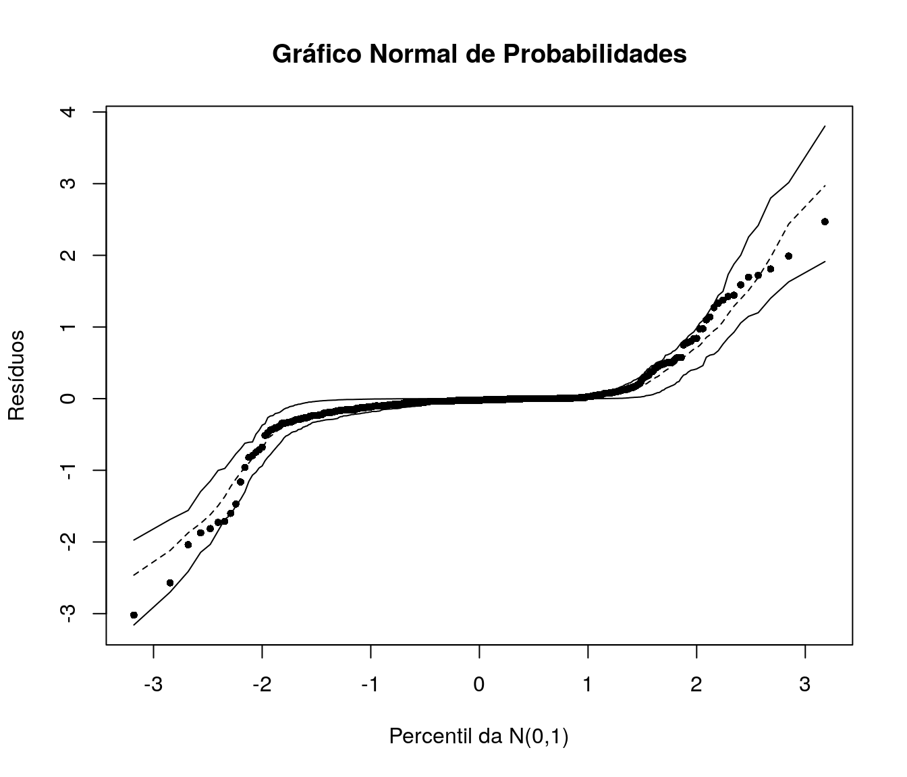
Os resíduos estão dispersos no interior dos envelopes simulados, sem aparente padrão sistemático dando indício de que o modelo está bem ajustado. Diversas outras opções de gráficos (meio) normais com envelopes simulados estão implementadas no pacote hnp
5.7 Gráficos de Efeitos
A função effects, do pacote de mesmo nome, devolve os efeitos marginais de cada variável de um modelo ajustado; os gráficos de efeitos nos fornecem uma forma visual de observar como cada variável explicativa afeta a resposta, com as demais variáveis fixadas na média.
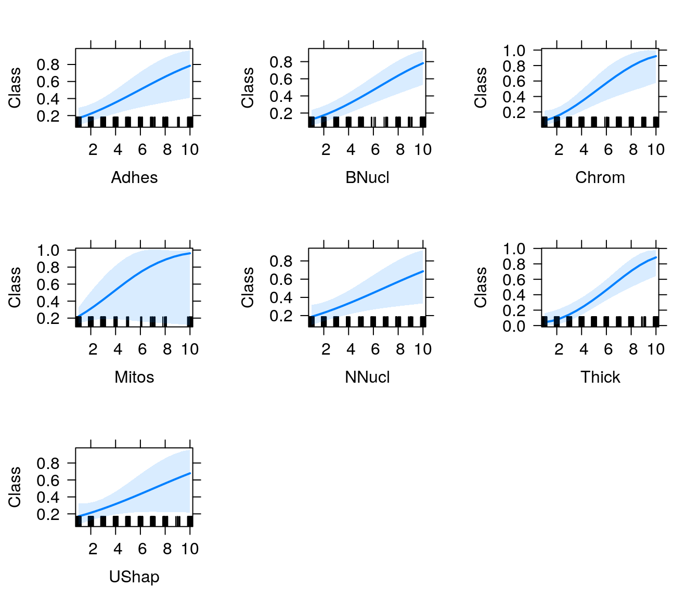
6 Predição
Para fins de predição, vamos considerar as seguintes características para duas observações distintas:
Tumor 1:
- Adhes = 6
- BNucl = 9
- Chrom = 3
- Mitos = 9
- NNucl = 8
- Thick = 2
- UShap = 6
Tumor 2
- Adhes = 3
- BNucl = 1
- Chrom = 7
- Mitos = 1
- NNucl = 3
- Thick = 4
- UShap = 5
E responder à seguinte pergunta: Qual é a probabilidade do tumor ser maligno nos dois casos apresentados?
perfis <- data.frame(Adhes = c(6, 3),
BNucl = c(9, 1),
Chrom = c(3, 7),
Mitos = c(9, 1),
NNucl = c(8, 3),
Thick = c(2, 4),
UShap = c(6, 5)
)Utilizando a função predict para obter a probabilidade de tumor maligno nestes indivíduos:
## 1 2
## 0.9998338 0.4900842Portanto, a probabilidade do tumor ser maligno, no primeiro caso, é 0,99; para o segundo caso, a probabilidade é de 0,49.
7 Avaliação do poder preditivo do modelo
Como temos uma base de tamanho razoável para fins preditivos, uma alternativa é separar a base em duas: uma para o ajuste do modelo, com 70% dos dados (com 477 observações) e outra para validação, com 30% (com 203 observações).
7.1 Divisão da Base de Dados
Primeiro vamos fixar uma semente, para que os resultados sejam reproduzíveis:
E indexar as linhas da base para realizar a separação dos dados:
Agora, da base total, vamos pegar 70% dos dados (477 linhas da base) para ajuste do modelo:
E 30% (203 linhas) para validação
7.2 Ponto de Corte
Como estamos modelando a probabilidade de tumor maligno, vamos estabelecer o ponto de corte 0.5, isso é, se a probabilidade estimada for maior que este valor o tumor será classificado como maligno.
Vamos armazenar os valores preditos do modelo para os dados de validação:
Estabelecer o ponto de corte como 0.5:
E verificar o número de classificações corretas e incorretas
##
## corte benigno maligno
## benigno 135 4
## maligno 4 61Ao todo, o modelo aplicado aos dados de validação, cometeu apenas 4 erros, indicando bom poder preditivo do modelo.
7.3 Sensibilidade e Especificidade
Para fazer uso dos dados de validação, dois conceitos são necessários: sensibilidade e especificidade.
Define-se por sensibilidade a capacidade do modelo de detectar tumores malignos, ou seja, de classificar como malignos os tumores que de fato o são .
Já a especificidade é a capacidade do modelo de detectar classificar como benignos tumores verdadeiramente benignos.
A sensibilidade é dada por:
## [1] 0.9384615Temos então que a probabilidade de o modelo classificar o tumor como maligno, dado que o tumor é realmente maligno é de aproximadamente 0,97.
Para a especificidade temos:
## [1] 0.971223A probabilidade de o modelo classificar o tumor como benigno, dado que o tumor é realmente benigno é de aproximadamente 0,98.
Sendo assim, ao que tudo indica, o modelo está bem ajustado e com bom poder de predição.
7.4 Curva ROC
A curva ROC (Receiver operating characteristic) é um gráfico que descreve a qualidade preditiva do modelo. É uma representação gráfica da sensibilidade e 1-especificidade. O método consiste no gráfico das probabilidades de verdadeiros positivos vs falsos positivos.
A curva ROC pode ser obtida com os seguintes códigos:
library(ROCR)
pred <- prediction(ajuste2.1$fitted.values, dados$Class)
perf <- performance(pred,"tpr","fpr")
plot(perf, xlab = '1 - Especificidade', ylab = 'Sensibilidade',
main = "Curva ROC", col = "blue", lwd = 2)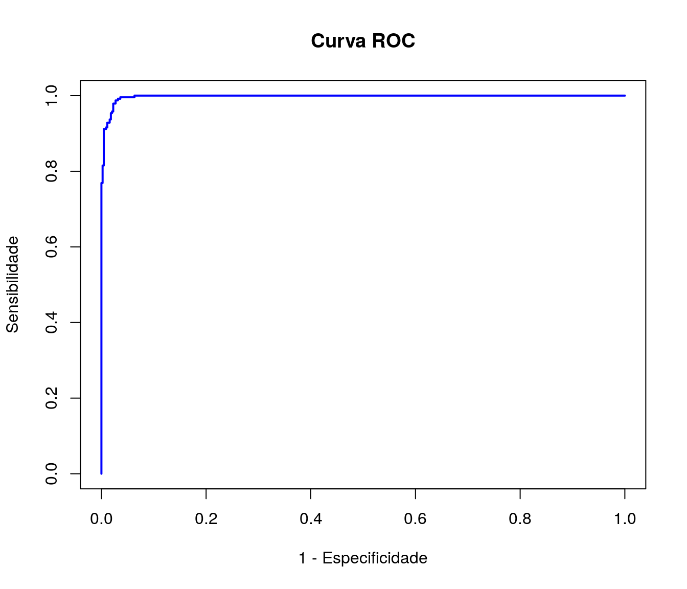
Quanto maior a área sob a curva, maior a qualidade do modelo; podemos obter a área sob a curva da seguinte forma:
## [[1]]
## [1] 0.9975055Como boa parte da área total está sob a curva ROC, verifica-se o bom poder preditivo do modelo.
7.5 Outra Alternativa de validação
Outra alternativa para avaliar a qualidade preditiva do modelo seria utilizando validação cruzada. A função cv.glm do pacote boot realiza este procedimento.
8 Referências
Bennett, K.,P., and Mangasarian, O.L., Neural network training via linear programming. In P. M. Pardalos, editor, Advances in Optimization and Parallel Computing, pages 56-57. Elsevier Science, 1992
Julian Faraway (2016). faraway: Functions and Datasets for Books by Julian Faraway. R package version 1.0.7. https://CRAN.R-project.org/package=faraway
|
|

|
|
|

|